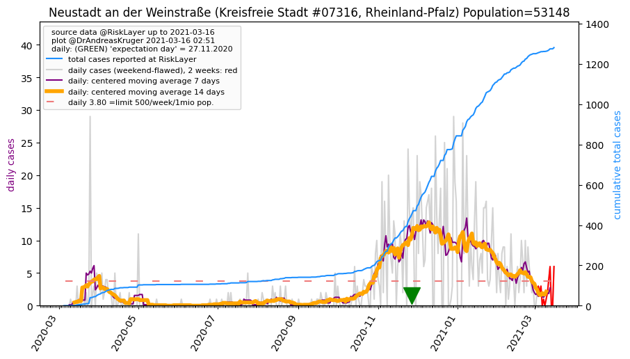
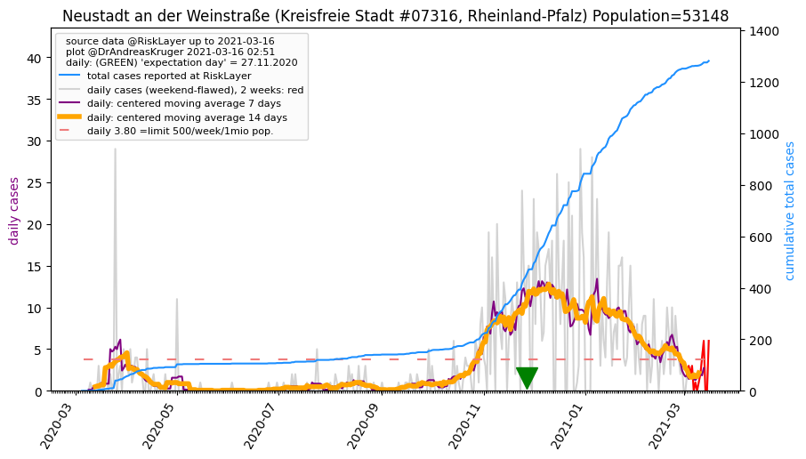

")
")
")
")
")
")
")

")
")
")
")
")
")
_KS (44.6 km)")
")
")
")
")
")
")
")
| Kaiserslautern_KS (0.0 km) |
Kaiserslautern_LK (5.7 km) |
Kusel_LK (24.7 km) |
Donnersbergkreis_LK (24.8 km) |
Bad Dürkheim_LK (25.5 km) |
| Südwestpfalz_LK (26.1 km) |
Pirmasens_KS (28.9 km) |
Neustadt an der Weinstraße_KS (30.2 km)  |
Landau in der Pfalz_KS (31.3 km) |
Südliche Weinstraße_LK (34.1 km) |
| Zweibrücken_KS (35.3 km) |
Saarpfalz-Kreis_LK (42.9 km) |
Rhein-Pfalz-Kreis_LK (43.6 km) |
Bad Kreuznach_LK (43.9 km) |
Frankenthal (Pfalz)_KS (44.6 km) |
| Alzey-Worms_LK (46.3 km) |
Ludwigshafen am Rhein_KS (46.4 km) |
Birkenfeld_LK (46.8 km) |
Neunkirchen_LK (47.1 km) |
Worms_KS (47.4 km) |
| St. Wendel_LK (48.8 km) |
Germersheim_LK (49.9 km) |
All plots are regenerated with new data every night. Beware this temporary hotspot is an experimental page - it might get removed, so please do not link to it. Instead link to project http://tiny.cc/cov19de.